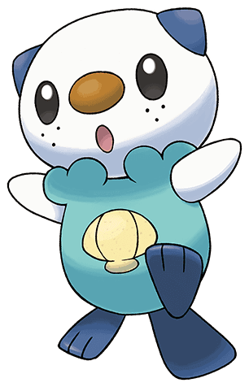
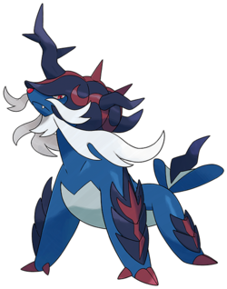

Moustillon - Le pokemon loutre
Moustillon
Moustillon est un pokemon originaire de la région d'Unys, dévoilé lors de la cinquième génération.
Son nom vient de la combinaison de Mousse, mustélidé et de moussaillon
| Nom | Moustillon |
|---|---|
| Taille Moyenne | 0,50 m |
| Poid Moyen | 5,90 kg |
| Talents |
Torrent
Coque Armure
|

Dans tous les jeux pokemons (Legende Arceus inclus), Moustillon évolue en Mateloutre au niveau 17, puis en Clamiral au niveau 36. Les clamiral de Hisui ont cependant une forme différente de celle des autres
Les différences notables de cette nouvelle forme par rapport à l'ancienne sont :
Il échange 23 points de statistiques :
Clamiral

Clamiral est la forme évoluée de Moustillon.
Son nom vient de la fusion de Clam (mollusque) d'amiral
| Nom | Clamiral |
|---|---|
| Taille Moyenne | 1,50 m |
| Poid Moyen | 58,2 kg |
| Talents |
Torrent
Incisif
|